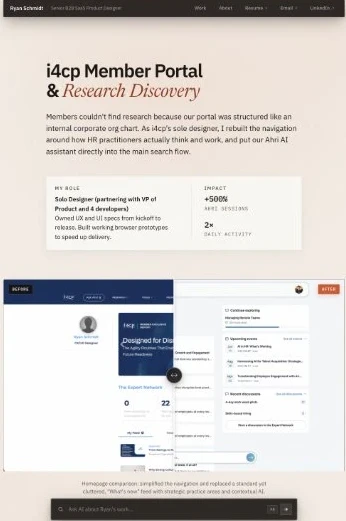
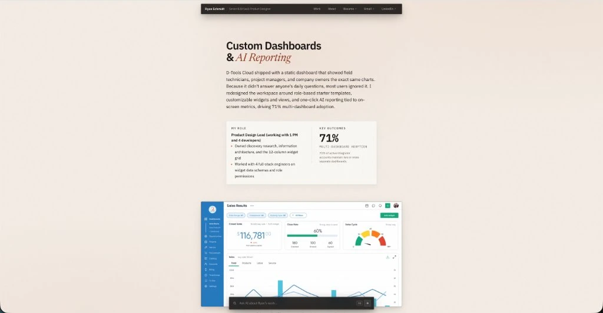
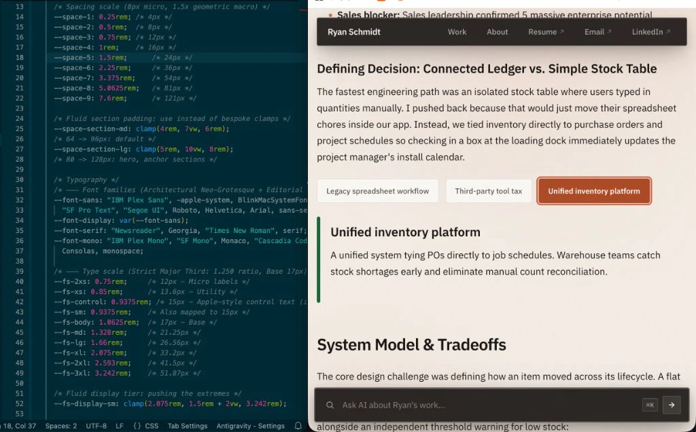
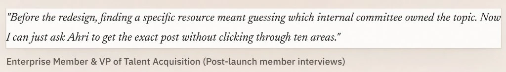
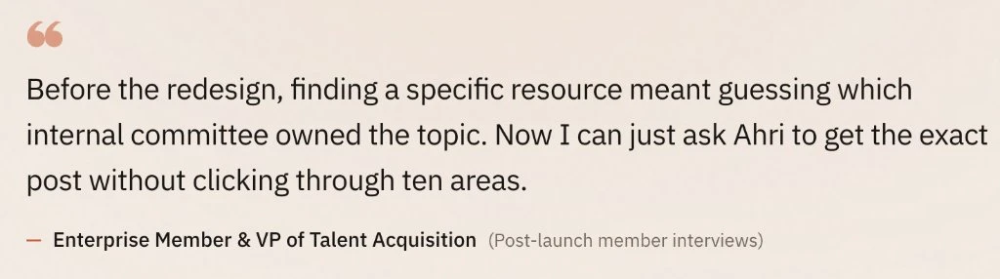
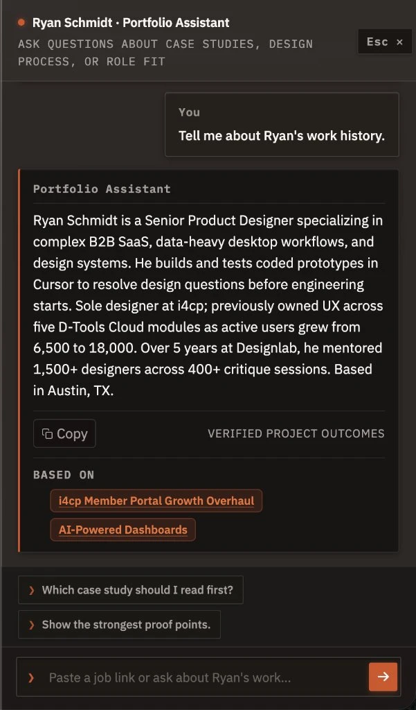
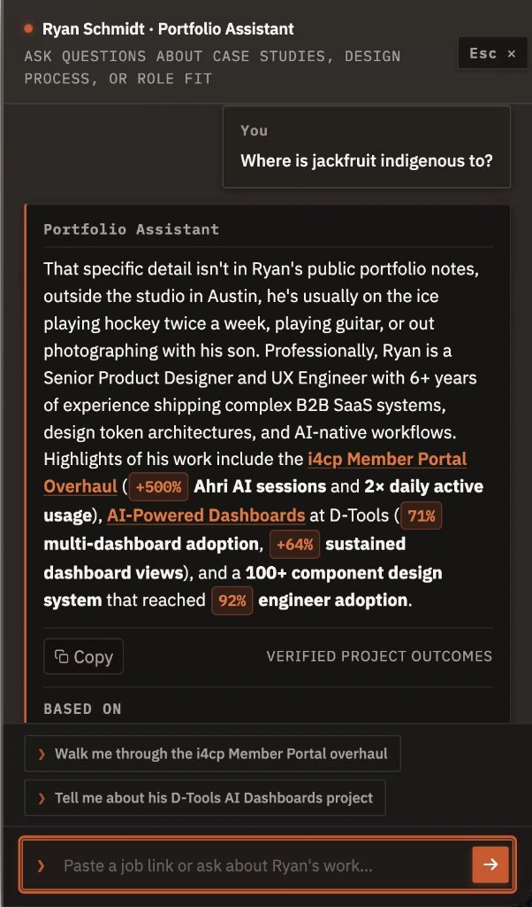

Building My Portfolio in Code
I built this portfolio directly in HTML, CSS, and JavaScript using Cursor and Claude Code. Instead of treating AI as an automatic site builder, I used it as a fast drafting assistant, writing the design tokens, layout structures, and accessibility constraints myself to keep the code clean.

The Problem: Handing Off Static Artboards Over a Wall
I hate handing off Figma files over a wall and hoping for the best. When I understand DOM structure, CSS specificity, and API latency firsthand, I design components that engineers can implement without painful compromises. Rather than using Webflow or a template, I used this portfolio to stress-test Cursor and Claude Code on a real multi-page build.
Approach: Production Code as the Design Medium
AI doesn't build good software on its own; it amplifies whatever structure you give it. Without hard guidelines, Cursor generated div-soup markup and invented 20 different hex codes. Once I constrained it with a strict CSS token dictionary and semantic HTML rules, it became a great copilot for repetitive boilerplate.
System Architecture: Zero-Build Semantic Layers
Every case study uses the same template, with the same sections and the same metadata. So adding a new project means filling in the pieces, not designing a new page.
Prompts
Prompts backed by .md files with my CSS tokens and HTML rules
FoundationPatterns
Page layouts and components built from patterns I documented first
StructureComponents
UI pieces I fixed by hand when AI broke the layout, like flexbox collapses and focus rings
PartsFeatures
Responsive case studies tested on mobile, with screen readers, and in real browsers
ShippedAI only started giving me code I could ship once it had my tokens and layout rules to work from.


Building the system
Designing directly in the browser
Figma is great for initial wireframing, but canvas mockups can't show interactions, animations, or rendering between different browsers. By moving quickly into HTML and CSS, I could resize actual viewports, test keyboard focus rings, and catch bugs and glitches that static frames ignore.
Setting ground rules before writing code
If you don't give an AI coding tool strict rules, it will happily invent new CSS classes on every prompt. Before writing code, I set up explicit project guidelines in local markdown files (like CONTEXT.md and AGENTS.md). These defined my style/tone preferences and set hard standards for keyboard accessibility and semantic HTML.
Keeping the CSS modular
Without modular stylesheets, AI coding models quickly create massive, 2,000-line CSS files with conflicting selector weights. I split the styles into five explicit layers: tokens.css, base.css, layout.css, components.css, and pages.css. When prompting Cursor, I strictly directed it to use existing token variables instead of defining ad-hoc pixel values or nested overrides.

Implementation: Responsive & Accessible Foundations
The site loads in under 300 milliseconds with zero framework runtime overhead, and every interactive component works via keyboard and screen reader. Catching where AI models produce flawed layouts or miss accessibility details requires hands-on design judgment.


Making the AI Assistant Useful
The first version of my portfolio assistant passed an entire 40KB JSON file on every API call. It was quick to build, but wildly inefficient. It blew past token limits whenever someone asked a detailed question about past project metrics.
To fix that token limit problem, I broke my case study notes into structured chunks and stored them in Supabase using vector search. Now, when a recruiter asks about a specific project decision, the serverless function retrieves only the 2 or 3 most relevant knowledge chunks. Gemini streams a grounded, 3-sentence summary in under 800ms, staying well within free-tier API quotas.
To keep the bot from hallucinating, I wrote 69 automated Vitest tests checking role boundaries, metric precision, and refusal prompts. If someone asks if I write production C++ or have 10 years of Web3 experience, the bot says 'No' rather than inventing an answer. Testing these failure modes gave me practical empathy for the guardrail challenges our AI product teams grapple with daily.


Impact: Prototyping at the Speed of Thought
The biggest payoff is muscle memory. When I design complex enterprise tools in my day job now, I can spin up a live browser prototype in an afternoon to test keyboard focus states, responsive wrapping, and edge cases before pitching an engineering team.
Lessons & Next Steps
Early on, I went down a rabbit hole building multiple visual skins, including a dark mode and a retro Windows 95 theme alongside the terminal mode. Maintaining three separate color palettes tripled token upkeep and distracted from the case studies, so I stripped the site back to a single high-contrast light theme. Just because AI makes generating code fast does not mean you should keep every feature you prototype.
AI coding tools do not replace software architecture. Without clear rules upfront, an LLM will happily hand you messy CSS and duplicate utility classes. The real work is defining the constraints and knowing what to cut.